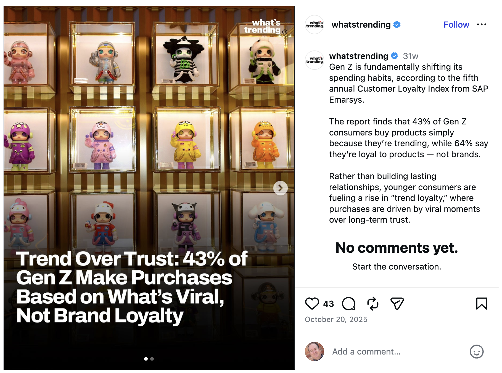
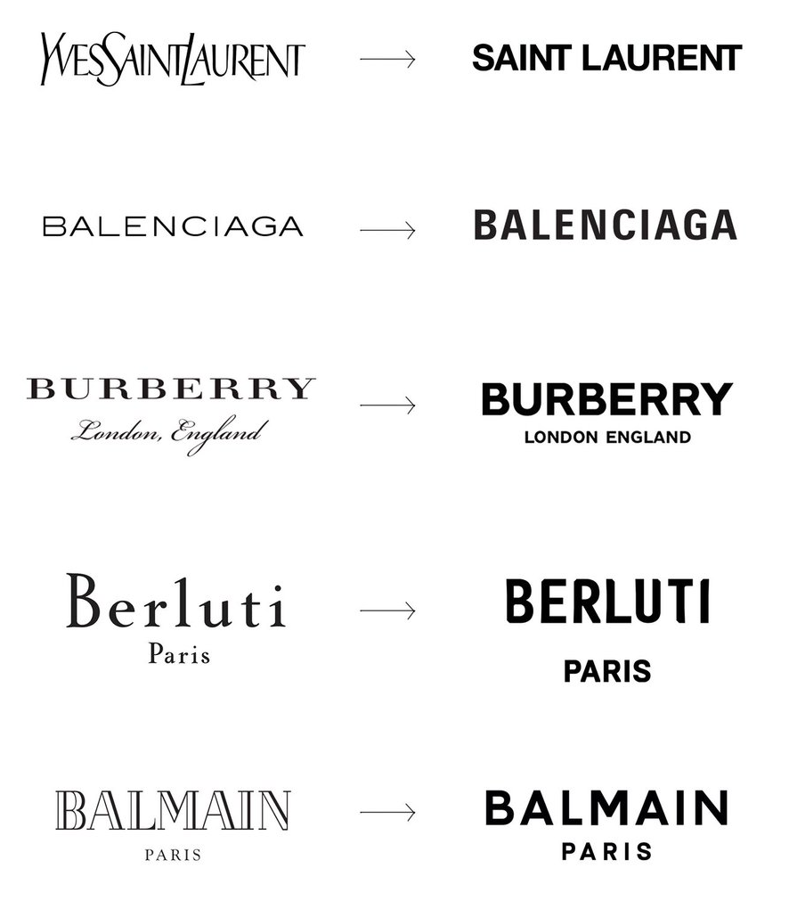
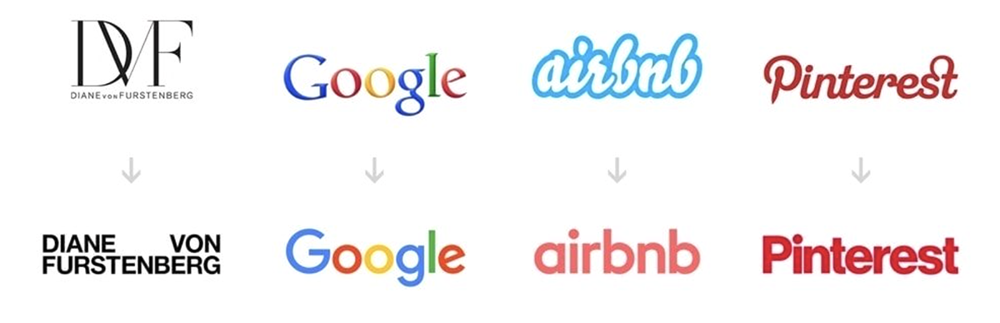
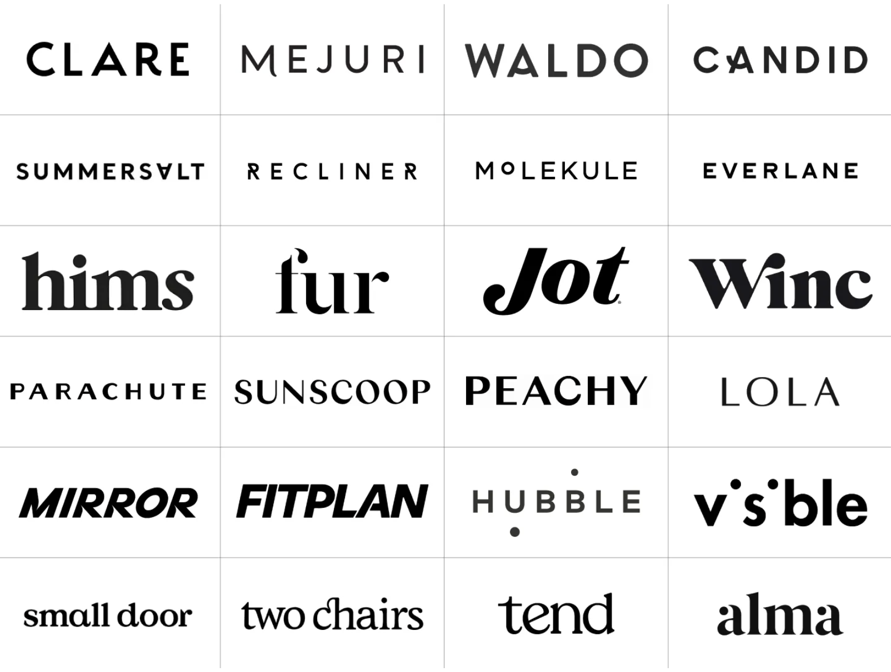
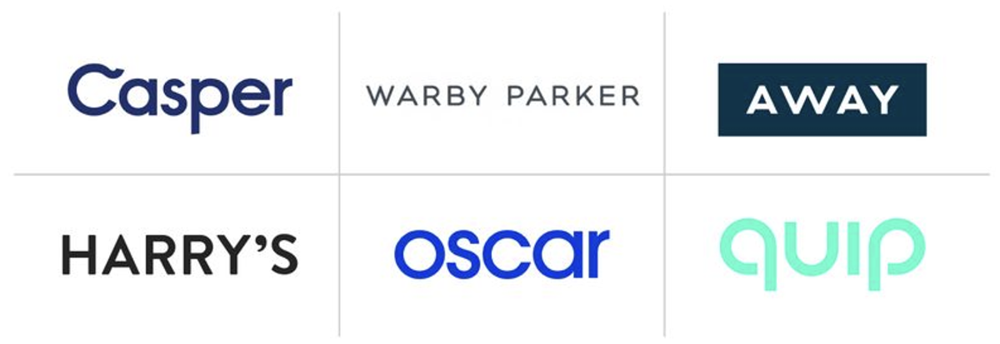
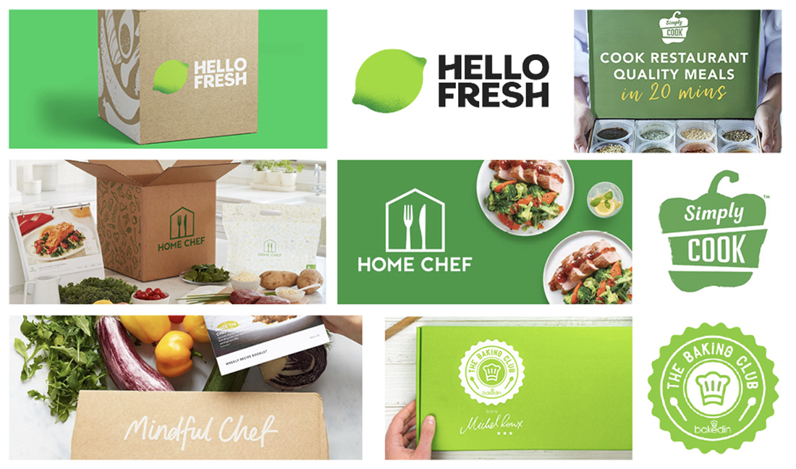
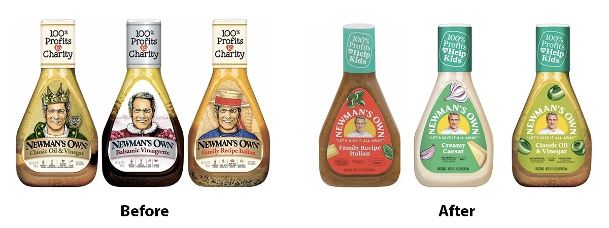
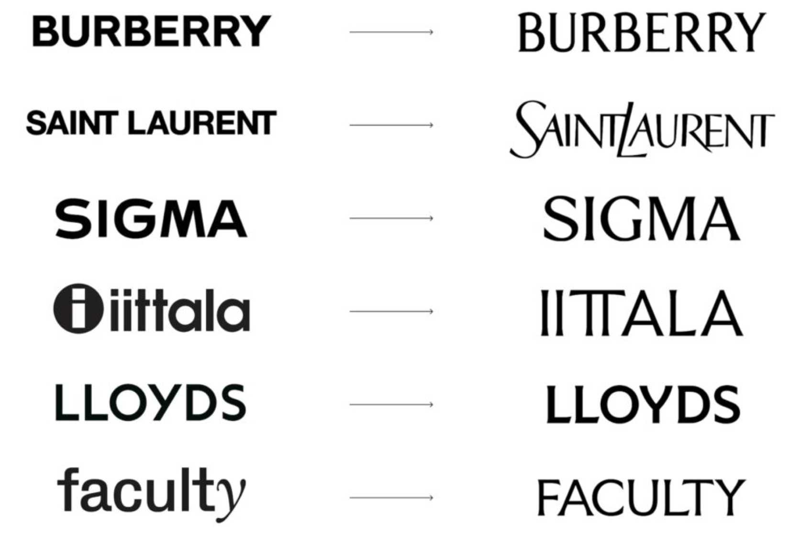

Trend Over Trust
There is a paragraph circulating in the marketing trade press, the marketing-adjacent corners of LinkedIn, and the cultural-criticism wings of Substack, that goes roughly like this: brands no longer matter to Gen Z. Younger consumers, the argument runs, are loyal to products rather than brands, attracted to whatever is trending in the moment, and broadly contemptuous of the corporate-identity machinery that the previous fifteen thousand words of this unit have just spent explaining how to build.
The argument has empirical support. SAP Emarsys's fifth annual Customer Loyalty Index, published in 2025, reported that 43 percent of Gen Z consumers buy products simply because they are trending, and 64 percent say they are loyal to products rather than brands. Stanley Quencher tumblers in 2024. Owala bottles in 2025. Erewhon green juice. Liquid Death. Olipop. These products were not driven by traditional brand investment in the way Parts A and B described. They were driven by viral attention, and they sold extraordinarily well.

This unit will not insult you by pretending the data are wrong. They aren't wrong. Gen Z does buy trending products at higher rates than older cohorts. The cultural shift is real, and treating it as a manufactured panic misses the genuine generational change underneath the survey. Something is happening.
But the headline conclusion that the survey produces — Gen Z does not care about brands — is doing more work than the data actually support. The honest version of the picture has three moving parts that the headline collapses.
1.1 Stated Preference vs. Revealed Preference
This is Sharp's argument from Part A applied to a new dataset. People consistently say one thing on surveys and do something different in the marketplace. The gap has been documented in consumer-behavior research for forty years. When you tell a pollster you don't care about brands, your kitchen still contains Heinz ketchup, Tide detergent, Crest toothpaste, and Coca-Cola. The 64 percent of Gen Z who report being loyal to products rather than brands go home to bathrooms and pantries that look statistically indistinguishable from their parents' bathrooms and pantries.
The trend story is true about what they say. The brand story is true about what they do. These are not contradictions. They are two different measurements of the same person, and treating either one as the whole picture is the mistake the marketing trade press has been making since the survey came out.
1.2 The Front-Stage / Back-Stage Distinction
The elegant way to reconcile the two measurements comes from the sociologist Erving Goffman, who in 1959 made the distinction between front-stage behavior — what people do when others are watching — and back-stage behavior, what they do when they are alone. Applied to consumer products in 2026, the distinction is doing real work.
Trendiness is concentrated in front-stage products: drinkware that gets carried through public spaces, fashion that gets photographed, energy drinks that get held up in TikTok videos, the visible Dunkin' or Starbucks coffee cup. These are products that other people see, and the buyer's choice signals something to those observers. Stanley tumblers are not actually superior cups. They are a social signal that the carrier has paid attention to a particular cultural moment.
Back-stage products operate by entirely different rules. Paper towels, dishwasher detergent, ibuprofen, deodorant, dental floss, garbage bags, cleaning supplies, frozen vegetables, canned beans. These are products no one ever sees the buyer use. The buyer's choice signals nothing to anyone, because there is no audience. And in these categories, brand loyalty among Gen Z is statistically similar to brand loyalty among their parents and grandparents. The Stanley-cup carrier still uses Bounty paper towels at home. The Dunkin'-cup holder still uses Tide.
Both behaviors coexist in the same person without contradiction. The buyer who insists they "don't care about brands" while wearing brand-name clothing and carrying a Stanley quencher is being entirely consistent: the visible items are social signals, and the invisible ones are running on brand loyalty the way they always have. The survey captures the social-signal answer because that is what surveys ask. The pantry captures the brand-loyalty answer because that is what the actual purchases reveal.
1.3 The Cultural Surface vs. The Underlying Mechanism
What changes between generations is the surface — which categories are most subject to viral attention, what design choices look modern this year, what aesthetic feels authentic to which generation, what cultural references unlock which audiences. The mechanism beneath the surface is consistent. Brands grow by being easier to recall, easier to recognize, easier to find, and easier to choose at the moment of category consideration. That mechanism does not care which generation is doing the buying.
The design industry, between roughly 2015 and 2022, read the surface of this cultural moment and concluded that the mechanism had changed too. It hadn't. What changed was which products were generating viral attention, and what aesthetic was reading as authentic to younger buyers in any given year. The underlying brand-equity mechanism — the slow accumulation of distinctive memory structures over time — was operating exactly as it had operated for the previous half-century.
The design industry's misreading of that distinction produced the phenomenon now widely called blanding. That misreading, what produced it, why it was strategically wrong, and the early signs that it's now reversing — that is the rest of this unit.
We will return to the broader question of brand-as-entertainment versus brand-as-memory-infrastructure in the unit on Social Media and Influencers, where the trade-offs between staying on-brand and chasing cultural moments deserve their own treatment. For this unit, the point is narrower: whatever Gen Z is doing with energy drinks and water bottles, the underlying mechanics of how brands grow and earn equity have not changed, and the design response that pretended otherwise has produced predictable damage.
- The Gen Z trend-over-trust survey data is real and worth taking seriously. The cultural shift is genuine.
- Stated preference (what people say on surveys) and revealed preference (what they actually buy) have had a forty-year gap in consumer research. The trend story and the brand story are both true, about different measurements of the same person.
- The Goffman front-stage / back-stage distinction explains the apparent contradiction. Trendiness lives in products other people see. Brand loyalty lives in products only the buyer sees. Both behaviors coexist in the same buyer without conflict.
- The underlying brand-equity mechanism is generation-agnostic. What changes between cohorts is the cultural surface, not the mechanism beneath it.
- The design industry mistook the surface for the mechanism. Blanding is what that mistake looked like in execution.
What Blanding Is
Blanding is the term, coined in design criticism around 2018 and now standard, for the trend in which brands stripped distinctive identity in favor of identical-looking minimalist aesthetics. Same flat sans-serif fonts. Same beige, sage, or muted-pastel palettes. Same lowercase wordmarks with no logo mark. Same earnest copy voice that could have been generated by any of three design studios in Brooklyn or Stockholm. Same product photography on the same beige backdrops.
The classic before-and-afters tell the story faster than any prose can.


The luxury cases are the most visceral, because the entire economic argument for luxury depends on perceived difference. A Saint Laurent bag at $3,200 carries the Saint Laurent bag because the wordmark is recognizable as Saint Laurent. When that wordmark becomes a flat sans-serif indistinguishable from a Banana Republic logo, the basis for the price erodes by inches per year. Most luxury houses that blanded between 2015 and 2022 are now quietly walking the change back, which we will get to in Section 6.
The direct-to-consumer cohort produced the same phenomenon at a different price point. Between 2017 and 2022, the venture-funded DTC wave hired the same handful of design studios to produce the same set of identity moves: a single-word brand name, a flat sans-serif wordmark with no logo mark, a soft-pastel palette, photography against beige backdrops, copy voice somewhere between earnest-millennial and gently-ironic-Gen-Z.


The result, when you place 24 of them on a page, is that the eye stops being able to tell them apart. The brands had all read the same design briefs, hired from the same talent pool, and converged on what their funders and their peers believed a "modern brand" looked like. The aesthetic was identical because, structurally, it came from the same place.
- Blanding is the convergence of brand identity onto a narrow visual vocabulary: flat sans-serif fonts, muted palettes, minimal ornamentation, lowercase wordmarks, beige photography backdrops.
- Two cohorts drove most of the trend: luxury fashion houses between 2014 and 2018, and venture-funded DTC startups between 2017 and 2022.
- The luxury case is the most strategically damaging, because luxury pricing depends on perceived difference. Blanded luxury wordmarks erode the price premium they once justified.
- The DTC case is more visually demonstrable. Two dozen brands designed by overlapping teams produced two dozen logos that the eye cannot distinguish.
The Forces That Drove It
Bad design choices at this scale don't arrive by accident. The blanding consensus was the predictable output of several converging forces, four of which are worth naming because each of them is still operating and will continue to produce blanding-adjacent design unless brand teams resist it deliberately.
None of these forces, individually, is unreasonable. The app icon really does need to be legible at 60 pixels. Canva really did make professional design accessible to operators who could not have afforded it otherwise. The DTC studios really did produce design work that was, by craft standards, good. AI tools really are useful for small teams that can't hire designers. Each force, taken alone, has a defensible justification.
The damage came from their interaction, and from the absence of any countervailing force pushing brands toward distinctiveness. Throughout the entire 2017–2022 window, the strongest design voices in the industry — the influential studios, the design publications, the conference circuit, the LinkedIn-design-discourse — were largely cheering the convergence rather than warning against it. By the time the warnings arrived, the cohort was already locked in.
- Four forces converged to produce blanding: the app icon problem, Canva-driven tool homogenization, the DTC design-studio bottleneck, and AI-amplified aesthetic averaging.
- Each force, taken alone, has a defensible justification. The damage came from their interaction and from the absence of countervailing pressure toward distinctiveness.
- Three of the four forces are still operating in 2026, which means blanding-adjacent design will continue to be the default unless brand teams actively resist it.
Why Blanding Is Structurally Bad
The aesthetic critique of blanding is the easy critique. Critics — and there are many — argue that minimalist sans-serif design is ugly, sterile, corporate, lazy, or some combination of these. The critique is often correct on its own terms but is also easy to dismiss as taste, which is the response most blanding-defenders use to deflect it. You don't like minimalism? That's a preference. The market has spoken.
There is a stronger critique that the aesthetic argument can't reach. It comes directly from the framework Parts A and B installed, and it has the advantage of being structurally unavoidable rather than a matter of taste.
Distinctive brand assets — Sharp's second pillar from Part A — are the infrastructure of mental availability. They are the recognition cues that allow buyers to identify a brand instantly across crowded shelves, mobile feeds, app drawers, and category-saturated digital environments. The Geico gecko, the Coca-Cola red, the Tiffany blue, the McDonald's arches: these are not decorations. They are equipment. Customers use them to find the product.
Blanding actively destroys distinctive brand assets. That is its operative mechanism. By converging onto the same fonts, palettes, and design conventions, blanded brands become measurably harder to recognize, harder to recall, and harder to find in environments where attention is scarce.
4.1 The Meal-Kit Anecdote
The designer Mark-Making, writing about the trend in late 2022, described going to look online for a specific meal-kit subscription brand he had heard recommended. He could not remember the name. He went to search for it. He could not tell the brands apart. Every meal-kit company — Hello Fresh, Home Chef, Simply Cook, Mindful Chef, The Baking Club — used the same green color palette, the same chef-iconography, the same handwritten-with-confidence wordmark style. He gave up and ordered nothing. I couldn't remember which one I wanted to try.

This is what mental availability failure looks like in the actual marketplace. The customer was a designer, trained to notice visual difference, with active intent to buy. The category had blanded itself into a state where it could not capture his attention long enough to convert his intent. The brands that lost the sale lost it because they had nothing distinctive enough to surface in the moment of purchase consideration. The customer left to think about it later. He never came back.
In Sharp's framework, this is the entire ballgame. A brand that has spent millions on customer acquisition, performance marketing, and category education — and then strips away the visual identity that would have allowed the customer to remember it — has spent the money to acquire a customer it will not retain, because the customer cannot find them again. Every dollar of brand-building investment that went into a blanded identity is a dollar deposited into the wrong account. The category gets the equity. The brand doesn't.
4.2 The Newman's Own Slide
The Newman's Own case is the other side of the same coin, and it's worth a longer look because the brand has been doing this to itself slowly enough that the damage is still recoverable.
Newman's Own was founded by the actor Paul Newman in 1982, with proceeds going to charity. The original salad-dressing bottle featured Paul Newman's face — actually printed on the label, looking the buyer in the eye, in costume appropriate to whichever variety the bottle contained. He wore a crown on the Classic Oil & Vinegar. A scarf and beard on the Balsamic Vinaigrette. A straw hat on the Family Recipe Italian. The face was a distinctive brand asset of exceptional power. Newman was famous, the face was unique, and the printed-face-on-the-bottle move was an unmistakable signal that the product was the one Paul Newman started.

Between 2018 and 2021, Newman's Own updated the packaging. Paul Newman is still there, but smaller, in a small medallion frame, and treated as one design element among many. The new bottles look much more like every other premium salad dressing — generic in a way the originals never were. The "100% Profits to Help Kids" line is preserved, and the brand has not collapsed. But Paul Newman, the man, is fading from cultural memory: he died in 2008, and a meaningful fraction of customers buying Newman's Own dressings in 2026 have no association with him as a person. The brand still bears his name. The visual asset that anchored the brand to him is no longer doing the work it used to do.
This is what blanding looks like applied to a brand that had something distinctive worth defending. The new bottles are not ugly. The brand has not failed. But the distinctive asset has been quietly degraded over multiple iterations, and the brand image is sliding from Paul Newman's company to one premium salad dressing among several. That slide is measurable, eventually, in revenue.
4.3 Reframing the Critique
The aesthetic critique of blanding — this is ugly — gets dismissed as taste because it is taste. The structural critique — this raises customer acquisition cost and lowers mental availability, in the framework you yourself use to evaluate brand investment — cannot be dismissed as taste. It is a budget problem disguised as a design choice.
Blanding's defenders rarely engage with this version of the critique, because the framework they would have to invoke to defend their position is the same framework that produces the critique. If Sharp is right about distinctive brand assets, then blanding is bad on Sharp's terms. The defenders of blanding either have to argue that Sharp is wrong (which the data make difficult), or that distinctive brand assets don't apply to their particular case (which requires showing why the buyer's recognition needs are different), or that the cost of stripping the assets is somehow lower than the benefit of conforming to the design consensus (which the meal-kit and Newman's Own cases suggest it isn't).
- The aesthetic critique of blanding (this is ugly) is correct but easily dismissed as taste.
- The structural critique — blanding destroys distinctive brand assets and therefore raises CAC and lowers mental availability — comes directly from the Sharp framework installed in Part A and cannot be dismissed as taste.
- The meal-kit case shows mental availability failure in real-time: a motivated buyer leaves the category without converting because the brands had blanded themselves into indistinguishability.
- The Newman's Own case shows the slower version of the same damage: a brand with an exceptional distinctive asset (Paul Newman's face) quietly degrades it over a decade of "modernization."
- Blanding is a budget problem disguised as a design choice. The customer-acquisition spend that goes into a blanded identity is largely wasted, because the customer cannot recognize the brand on the next encounter.
The Arguments For Blanding (And Why They Don't Hold)
To be fair to the case for blanding, the defenders make a small number of arguments worth engaging seriously. Most of them have some validity, and all of them turn out to be solvable without abandoning distinctiveness.
The strongest defense is small-size reproducibility. Brand identity in 2026 has to work at every size from a 16-pixel favicon to a 60-pixel app icon to a 600-foot billboard. Ornate logos genuinely do not scale down. The Burberry equestrian monogram, at 16 pixels, becomes a small black smudge. The Saint Laurent script, at the same size, is illegible. Blanding's defenders argue that simplification was forced by the visual environment, not chosen out of laziness.
The argument is partially correct, and also false in the specific way that matters. Mastercard kept its two circles. Nike kept the swoosh. McDonald's kept the arches. Apple kept the apple. All four work at 16 pixels AND at billboard size, in app drawers and in airport terminals, on watch faces and on stadium scoreboards. The dichotomy between "distinctive at large size" and "legible at small size" is a false dichotomy, and the brands that committed fully to blanding under cover of the small-size argument were the ones that lacked the design discipline to solve for both simultaneously. The good designers solved it. The blanded brands gave up.
The weaker arguments deserve briefer treatment. Flexibility across global markets — minimalist designs travel better across cultures than character-heavy ones — has some truth, but the global brands with the strongest mental availability (Coca-Cola, McDonald's, Apple) all kept character-heavy identity systems. Ease of brand extension — a minimal identity is easier to apply across new product lines than a maximal one — is genuinely true, but a brand that extends so far that its identity has to be minimal to fit is a brand that has lost the focus that makes it valuable in the first place. Cost of design execution — minimalist design is cheaper to produce and revise — is real, and is also the part of the argument most blanding-defenders avoid saying out loud, because admitting that the design choice was driven by budget rather than strategy undermines the strategic case.
The blanding-as-strategic-choice argument was never as strong as its defenders implied. It was a rationalization for an aesthetic preference combined with a budget incentive — minimalist design is cheaper to produce, easier to revise, and faster to ship than distinctive design. The strategic justification was layered on after the aesthetic and budgetary choices were already made. The cost showed up later, on the demand side, in ways the design budget didn't have to account for.
- The small-size reproducibility argument is the strongest defense of blanding, and it is also wrong in practice. The best-resourced brands solved for distinctiveness AND legibility simultaneously; the dichotomy was false.
- The other defenses — flexibility, extension, cost — are real but minor, and each is solvable without abandoning distinctiveness.
- The honest motivation for most blanding was aesthetic preference plus budget pressure, with strategic justification layered on after the fact.
Signs Blanding Is Fading
The good news, for anyone pessimistic about the future of distinctive brand identity, is that blanding appears to be in retreat. The reversal is visible in three places.
6.1 Luxury Fashion Walks It Back
The brands that blanded most aggressively between 2014 and 2018 are now restoring ornament, serifs, monograms, and distinctive treatments at a measurable rate. Design publications have started using the term de-blanding in earnest.

Burberry's 2023 wordmark update reintroduced a custom serif. Saint Laurent's wordmark has reincorporated the script Y monogram in marketing applications. Iittala and Berluti are walking similar paths. Lloyds Bank — which blanded in 2017 — restored serifs in its 2024 refresh. The pattern is consistent enough that it has become its own design-press genre, and the houses doing it are getting credit for the move rather than skepticism.
6.2 Mascot Revivals Everywhere
Brand mascots — the most distinctive of distinctive brand assets, because they're characters with names and personalities — were among the heaviest casualties of the 2015–2022 minimalism push. The Geico Gecko got less screen time. Mr. Peanut was killed, mourned, and resurrected as a Super Bowl stunt. The Pillsbury Doughboy went silent. The Kool-Aid Man retreated to the children's-cereal subset of media buys.
As of 2024 and 2025, every one of those mascots is back in active rotation, in some cases with more screen time than they had pre-blanding. Brand teams have remembered that a character carries more equity than a wordmark, because a character is harder to copy, harder to replicate, and harder to confuse with a competitor. The Geico Gecko in 2025 is doing the same job he was doing in 2005, only the brand teams that quieted him during the blanding years have been replaced.
6.3 The Burger King Reversal
Burger King's 2021 vintage reversal is the textbook case. The brand reverted from a flat sans-serif minimalist identity to its 1969-era vintage logo, restored a warmer color palette, and brought back display-typography treatments that had been stripped during the 2010s. The reversion was widely covered in the design press as either a brave anti-blanding move or a reckless nostalgia play, depending on which design critic was writing.
The data have since settled the debate. Burger King has gained brand-recognition score and same-store sales since the 2021 update. The vintage move worked. Brand teams across categories have been studying the playbook ever since.
6.4 The Liquid Death Counter-Example
Liquid Death is the high-profile counter-example to the entire blanding era. Founded in 2017, the brand chose to do the deliberate opposite of every blanding convention: heavy metal aesthetic, aggressively confrontational packaging, copy voice somewhere between thrash-band lyrics and IT-Crowd dialogue, no minimalism anywhere in the brand system. The brand reached a $1.4 billion valuation by 2024 selling, fundamentally, water in a can.
The lesson Liquid Death offers is not that every brand should adopt heavy metal aesthetics. It is that there was substantial market demand, throughout the entire blanding era, for brands that committed to being something specific. The consultancy-driven design consensus of 2017–2022 was leaving that demand on the table. Liquid Death picked it up.
6.5 The Schnozz Doctrine
The design agency Base, writing about the trend in 2023, put it more directly than most design publications would. The advice was offered as a joke. The advice is also the entire blanding-recovery playbook compressed into a paragraph.
Does your company have a big nose? This is how people will remember you, whether you like it or not. So you might as well own it. Call your company Schnozz. Make a proboscis monkey your mascot. Donate a percentage of profits to preserving their habitat. Commission deluxe, XL facial tissues, brand them and give them to clients. Live the truth that big noses build character. Then translate that to visuals that feel like you, not somebody else. Just stay away from the sans-serif in vibrant colors like purple and turquoise and cheerful illustrations, okay?
Strip away the joke and the advice is the same advice Sharp would give: find the distinctive thing your brand actually is, commit to it, and refuse to let the prevailing design consensus talk you into looking like everybody else. The brands that have done this — Liquid Death, Burger King post-2021, the luxury houses now walking blanding back — are the brands the data say are winning the post-blanding period.
- Luxury fashion is leading the de-blanding reversal. The houses that stripped distinctiveness between 2014 and 2018 are restoring it as of 2023–2025.
- Mascot revivals are happening across categories. The brand teams that quieted distinctive characters during the blanding years have largely been replaced.
- The Burger King 2021 vintage reversal is the textbook recovery case. The data have settled the debate: it worked.
- Liquid Death is the counter-example. A brand that did the opposite of every blanding convention reached a $1.4 billion valuation selling canned water — evidence that the demand for distinctive brands never went away.
- The Schnozz Doctrine, from Base Design: find what's distinctive about your brand, own it, and refuse to let prevailing design consensus flatten it out.
The Lesson
Parts A and B of this unit installed a framework. Part C has applied that framework to one specific contemporary design trend, partly because the trend is recent enough to be relevant and partly because watching the framework predict the outcome is more useful than watching it explain something that already settled decades ago.
The lesson, for anyone responsible for brand-building decisions, is short.
If your brand has distinctive assets — a recognizable color, a character, a typeface, a sound, a verbal hook, a person whose face has been on the label since 1982 — defend them. Treat them as the most valuable property the brand owns, because they are. Evolve them carefully when the visual environment demands it, but do not discard them in pursuit of a design trend whose half-life will not exceed the half-life of the cultural moment that produced it.
If your brand does not have distinctive assets, build them. Pick a small number — three is the working maximum — and commit to them obsessively, for years, across every customer touchpoint. The compounding mechanism in brand equity does not work without something to compound on, and the something is the distinctive asset that the customer remembers when they encounter you again.
Do not let the cultural pressure to look modern, or to look authentic, or to look minimal, talk you out of looking like yourself. The buyers who tell pollsters they don't care about brands are still buying brands, just on different shelves than they used to. The brands that survive the rest of the 2020s are the ones that committed to being something specific and refused to abandon that commitment when the design consensus told them to.
7.1 A Five-Thousand-Year Callback
The opening of Part A made the point that brand identification is a five-thousand-year-old human behavior. Cattle owners burned iron marks into livestock in 2700 BCE. Medieval guild smiths stamped their work. Frontier ranchers branded leather, wood, and barrels alongside their cattle. The Industrial Revolution turned the practice into consumer-facing identity. Each era required the brand to look different — what worked on a cow does not work on a billboard, and what worked on a billboard does not work in a 60-pixel app drawer — but the underlying behavior never changed. People mark their stuff so other people can find it.
Blanding is the recent chapter of that history in which a meaningful fraction of brand designers forgot what the marking was for. The chapter was a real one. It shook the industry for nearly a decade and produced billions of dollars of mostly-wasted brand-investment spend. But five thousand years of human behavior says the designers will figure it out again, and the current evidence suggests they already are. The brands that come out of this period strongest will be the ones that didn't lose the thread in the meantime.
That is the unit. The framework is yours now. Apply it to whatever brand-related decision lands in your inbox next.
More Views
The blanding literature is unusually opinionated, partly because most of the writers are designers who watched the trend happen in their own profession and have strong feelings about it. The six articles below are the load-bearing ones. Read at least two; they're short.
The piece that put the word "blanding" into broader circulation in 2018. Concise, opinionated, with the early case studies that became the standard references. Read this first.
The source of the Schnozz Doctrine quoted in Section 6. A design agency arguing against the consensus aesthetic their own industry produced. The most readable of the six and the funniest.
The source of the meal-kit anecdote in Section 4. A working designer describing being unable to recognize the brands in a category he wanted to buy from. The clearest statement of the customer-side consequences of blanding.
The source of the Newman's Own case in Section 4. A packaging-focused design agency walking through specific brands that lost identity-defining assets in pursuit of modernization. Good if you want more examples of the slow-slide failure mode.
A working brand consultancy explaining the trend to its own clients. Useful as a practitioner's read on what was actually being sold to brand teams during the 2018–2022 window, and what the agency-side rationalizations looked like.
A balanced overview that engages seriously with the pros (small-size reproducibility, flexibility, cost) before getting to the cons. Useful as a counterweight if you found the other five too one-sided.
Glossary
Curated terms used in this part of the unit. Definitions are one sentence, intended for review rather than substitution for the section that introduced the term.
- Blanding
- The trend, dominant in design from roughly 2015 to 2022, in which brands stripped distinctive identity in favor of identical-looking minimalist aesthetics.
- De-blanding
- The reverse trend, visible from 2023 onward, in which brands restore distinctive ornament, serifs, characters, and color palettes after years of minimalist treatment.
- Trend loyalty
- The behavior, reported especially among Gen Z, of buying products driven by viral attention or cultural momentum rather than accumulated brand familiarity.
- Stated preference
- What buyers tell surveys or researchers they prefer — distinct from what their actual purchase behavior reveals.
- Revealed preference
- What buyers actually purchase — distinct from what they say they prefer; the two have had a documented forty-year gap in consumer research.
- Front-stage behavior
- From Goffman: behavior that occurs when others are watching. Applied to consumption, the purchases that signal something to observers — drinkware, fashion, visible coffee cups.
- Back-stage behavior
- From Goffman: behavior that occurs when no one is watching. Applied to consumption, the purchases that signal nothing because there's no audience — paper towels, deodorant, garbage bags.
- App icon problem
- The legitimate design challenge of making brand identity legible at 60-pixel mobile-app-icon size — used as the strongest defense of blanding, and also the false dichotomy the best-resourced brands disprove.
- DTC consultancy bottleneck
- The structural reason most venture-funded direct-to-consumer brands of 2017–2022 looked alike: a small number of design studios produced the visual identity for an outsized fraction of the cohort.
- Distinctive brand assets
- From Sharp (Part A): the visual, verbal, and sensory codes that allow buyers to identify a brand instantly. Blanding destroys these by convergence; de-blanding restores them.
- Mental availability
- From Sharp (Part A): the probability that a brand surfaces in a buyer's mind at the moment of category consideration. Blanding lowers it because the brands become harder to recognize and recall.
- The Schnozz Doctrine
- From Base Design: find the distinctive thing your brand actually is, own it explicitly, and resist the prevailing design consensus pulling you toward sameness. Section 6 of this unit.
- Brand mascot
- A character associated with a brand, typically with a name, personality, and visual identity. Among the most defensible of distinctive brand assets because characters are harder to copy than wordmarks.
- Newman's Own slide
- The slow-erosion failure mode in which a brand quietly degrades a distinctive asset (a face, a character, an iconography) over multiple "modernization" iterations, with damage that accumulates over years rather than appearing immediately.
- Authenticity paradox
- The Gen Z preference for brands that feel "authentic" or "unpolished" that, in practice, has produced an aesthetic of intentional roughness that is itself a uniformly adopted style — generating its own version of blanding.